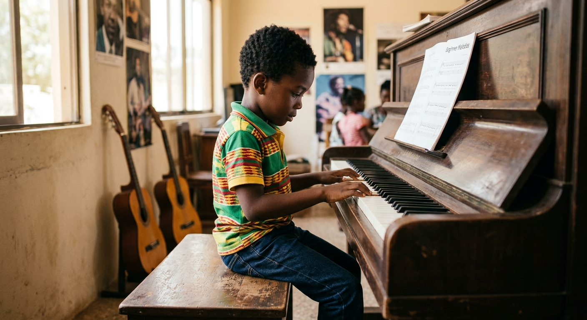
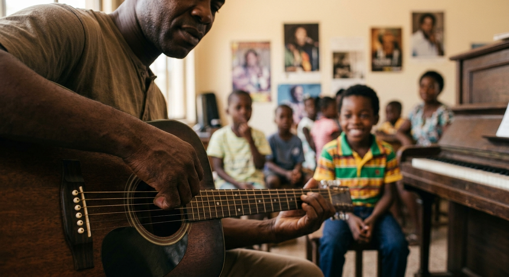

Purposeful beginnings
Clear first steps for learners finding their musical voice.

Kasarani, Nairobi
A place where musical curiosity becomes a steady, confident practice.
KMC brings together skilled teaching, purposeful learning plans, and a generous creative community for every stage of the journey.

About KMC
Great learning is built on more than talent. It needs patient direction, a room that feels safe to try, and a practice path that makes sense to the person in front of the teacher.
At Kasarani Music Center, beginners and developing musicians learn through practical work, useful feedback, and opportunities to grow in confidence over time.
Clear first steps for learners finding their musical voice.
Guidance that works with each learner's pace and goals.
Musicianship prepared for lessons, recitals, and the next opportunity.
The KMC way
We make room for early questions, individual goals, and the joy that brought someone to music in the first place.
Technique, listening, rhythm, and practice become connected skills rather than separate tasks.
Students develop the confidence to rehearse, perform, create, and meet the next musical challenge prepared.
Learning areas
Programmes are grounded in regular practice, thoughtful instruction, and a learning plan that shows the next useful step.
Technique, reading, repertoire, and confident musical expression.
Practical foundations, accompaniment, repertoire, and musical fluency.
Healthy vocal habits, expression, stage presence, and performance craft.
Rhythm, sight reading, ear training, and the language behind the music.
Movement, ensemble work, drums, and creative exploration in a shared space.

Beyond the lesson
The work done in a lesson grows through rehearsal, creative collaboration, recitals, and the courage to let others hear what you have been making.
Passion to Profession.
The KMC student app
The student app gives families and learners one calm place to follow the work happening around every lesson.
First time installing on Android?
Your next lesson starts here